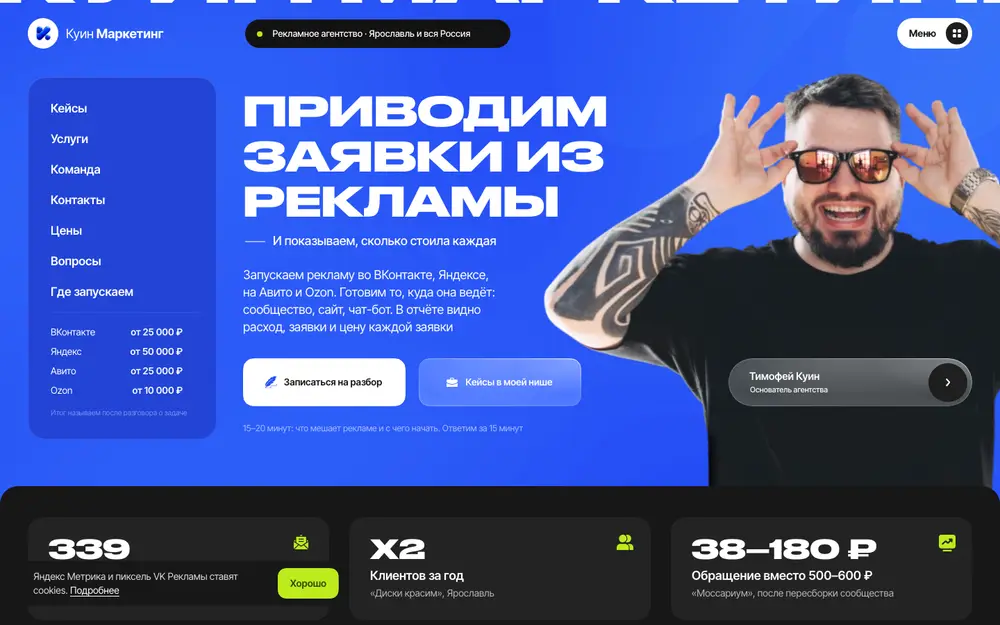
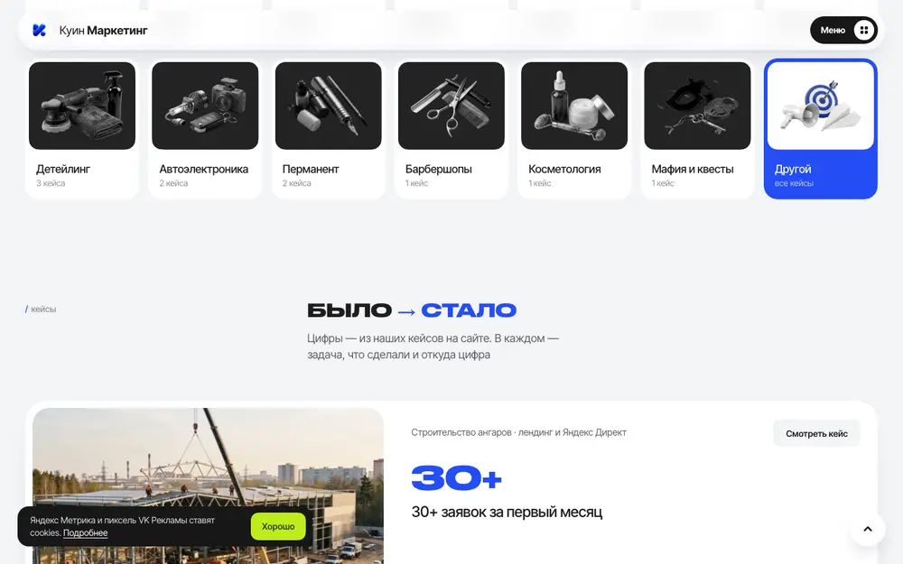
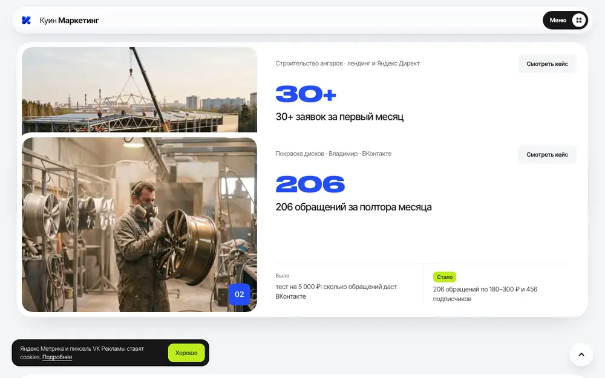
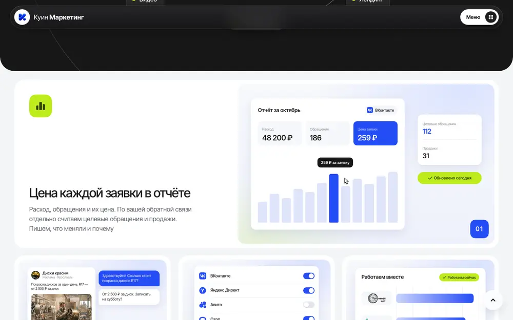
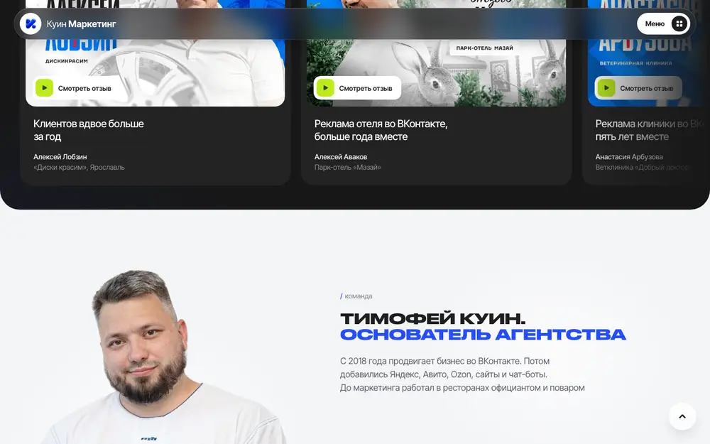
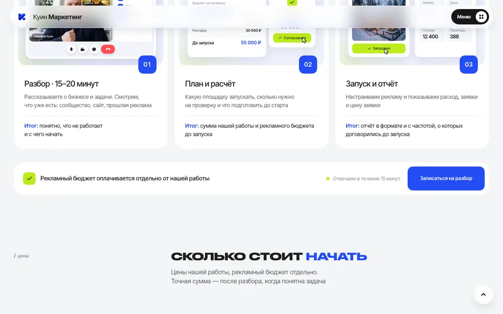
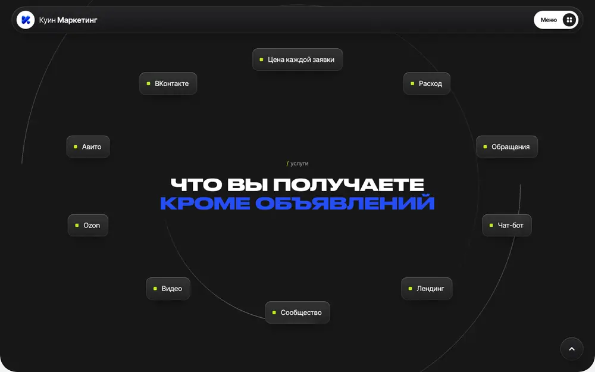
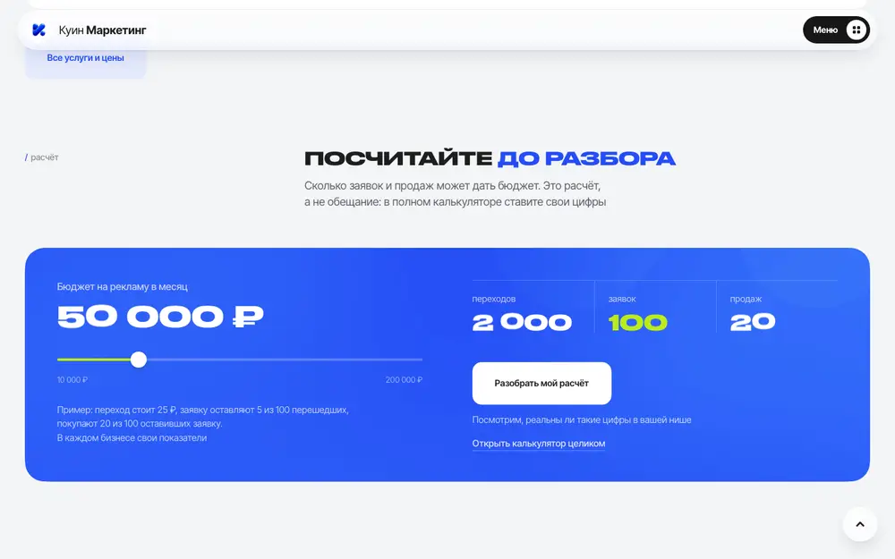
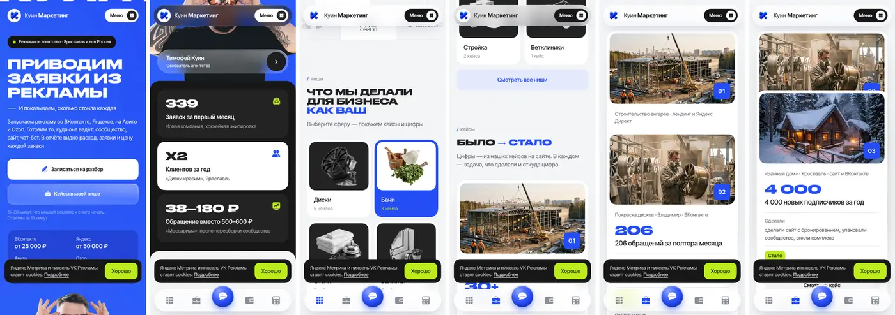

Дефорд · Новосибирск · 10.11.2026 · внутренний разбор, не для поиска
Разбор kuintim.ru: что берём для Дефорда
«Куин Маркетинг», Ярославль. Агентство, которое продаёт одно: заявки из рекламы и цену каждой. Разобрали главную по блокам, маркетинг, легенду основателя, анимацию и весь сайт (171 адрес).
Сильная сторона донора – один смысл и одно действие. «Приводим заявки из рекламы и показываем, сколько стоила каждая» – и везде одна кнопка «Записаться на разбор» (15–20 минут, бесплатно, ответ за 15 минут).
Доверие строят фактами с адресом: каждая цифра на главной ведёт в кейс, в кейсе стоит «источник показателя, сверено 29.09.2026». Отзывы – «которые можно проверить»: автор, дата, ссылка на оригинал.
Легенда основателя простая и человеческая: бывший официант и повар, с 2018 года во ВКонтакте, совладелец кухонь в Ярославле – «рекламу считает как свою». Лицо на первом экране с объёмным эффектом за курсором.
Слабо: кейсы в заявках и подписчиках, а не в деньгах; бизнесы маленькие, тесты по 5 000 ₽; гарантий нет; сайты и SEO у них дешёвые и вторичные (лендинг от 9 900 ₽, SEO от 10 000 ₽); опечатки в карточках кейсов.
У Дефорда козыри сильнее: два собственных бизнеса в Новосибирске, кабинет заявок вместо отчёта, сайты на коде, поиск и нейросети, кейсы в рублях продаж. Структуру и анимацию берём, тексты и смыслы – свои.
Что это за сайт
Техника
Astro (статика) + своё JS без фреймворков: main.js 37 КБ, плавный скролл Lenis, объёмное фото на WebGL 5 КБ. Картинки WebP (76 из 83), ленивая загрузка у 65 из 67. Шрифты: Druk Cyr (широкий жирный) в заголовках и Inter Tight в тексте. Цвета: синий #254df6, салатовый #bcec1c, почти чёрный #171717, фон #f3f4f6.
Поиск и нейросети
Метрика и пиксель VK Рекламы по согласию на cookie. Разметка: ProfessionalService, Organization, Person, WebSite, FAQPage. robots.txt открыт отдельно для GPTBot, ClaudeBot, PerplexityBot, Google-Extended; есть llms.txt; Clean-param для меток. Под нейросети сделано всерьёз.
Масштаб
171 адрес: 57 кейсов, 21 статья-кейс, 17 материалов, 14 ниш, 8 страниц команды, 9 направлений и 30 услуг, 6 калькуляторов, подбор услуги, FAQ на 120 КБ текста. Главная – 13 блоков, 15 800 px на компьютере и 20 000 px на телефоне.
Главная по блокам

Первый экран: оффер, цены «от» в левой панели, фото основателя с объёмом за курсором, сразу под ним цифры.

Ниши: 14 плиток с предметами в одном стиле и числом кейсов. Клик – окно с кейсами ниши и кнопкой записи.

«Было → стало»: карточки кейсов прилипают и ложатся стопкой при прокрутке.

«Что вы получаете»: вместо фото – живые картинки интерфейса (отчёт, переписка, площадки, «работаем вместе»).
№
Блок
Что говорит
Зачем это работает
Берём?
0
Шапка-пилюля + мегаменю
9 направлений, 30 услуг, телефон, «Записаться на разбор»
За 1 клик видно всё, что умеют; шапка меняет тон под блок
да, 5 направлений
1
Первый экран
«Приводим заявки из рекламы. И показываем, сколько стоила каждая». Слева цены «от»: ВК 25 000, Яндекс 50 000, Авито 25 000, Ozon 10 000
Результат + механизм + цены сразу. Цены на первом экране отсекают тех, кому дорого, и снимают «а сколько стоит»
да, своими словами
2
Три цифры
339 заявок за первый месяц · ×2 клиентов за год · 38–180 ₽ вместо 500–600 ₽
Доказательство сразу после обещания, каждая цифра – ссылка на кейс
да, цифры в деньгах
3
Логотипы
Две ленты навстречу, можно тянуть мышью
Социальное доказательство без текста
да
4
Ниши
«Что мы делали для бизнеса как ваш»: 14 ниш с числом кейсов
Узнавание: человек ищет себя, а не читает про агентство. Ниша уходит в заявку
да, по числу живых кейсов
5
Было → стало
4 кейса: ниша · город · канал, цифра, было / стало
Конкретика вместо «мы профессионалы»
да
6
Что вы получаете
Орбита из плашек + 4 карточки: цена заявки в отчёте, то, куда ведёт реклама, площадка под бизнес, работаем долго
Показывает результат работы картинкой интерфейса. Орбита – красиво, но съедает экран
да, по смыслу Дефорда
7
Отзывы
3 видео: «клиентов вдвое больше», «больше года вместе», «пять лет вместе»
Длительность сотрудничества – сильный аргумент
да
8
Основатель
Тимофей Куин: с 2018 ВКонтакте, был официантом и поваром, совладелец кухонь; 3 пункта; полоса команды
Человек вместо бренда; «сам владеет бизнесом» снимает страх «им всё равно на мои деньги»
да, у нас сильнее
9
Как начинаем
Разбор → план и расчёт (работа 25 000 + реклама 30 000 = 55 000) → запуск и отчёт
Показывает сумму до старта – снимает страх «втянут в расходы»
да
10
Цены
Разбор 0 ₽, реклама и «куда ведёт реклама» с ценами «от»
Прозрачность. Но лендинг от 9 900 ₽ и чат-бот от 5 000 ₽ – дешевят
да, без демпинга
11
Калькулятор
Бюджет → переходы → заявки → продажи, «это расчёт, а не обещание»
Вовлекает, цифры уходят в заявку. Нет денег на выходе
да, с выручкой
12
Вопросы
7 вопросов, ответы опираются на кейсы
«Когда первые заявки?» – ответ цифрами из кейсов, а не «зависит»
да
13
Заявка
Телефон + сайт, ВКонтакте, MAX, телефон; «ответим в течение 15 минут»
Минимум полей, срок ответа, выбор канала
да, Telegram + Макс
Маркетинг: легенда и фишки

Блок основателя: «до маркетинга работал в ресторанах официантом и поваром».

«Как начинаем»: у каждого шага итог и живая картинка – звонок, расчёт с кнопкой «Согласовано», первая неделя рекламы.
Легенда основателя – из чего собрана
«Куин – это фамилия. И отношение к работе». Фамилия = бренд = ответственность лично. Страница «Об агентстве» начинается с этого.
Простой путь: официант и повар → с конца 2018 продвигает предпринимателей во ВКонтакте → собрал команду. Человек «из народа», понятный малому бизнесу.
Сам владеет бизнесом: совладелец «метркухни» (кухни на заказ) – «рекламу считает так же, как свою: в заказах и деньгах».
Сначала пробует на себе: новые площадки и связки – на своих проектах, потом клиентам.
Говорит с владельцем: первый разговор всегда с основателем, «вы сразу понимаете, с кем работаете».
Чужой авторитет: видеосерия «Куин и Кукин про ВК» – разборы рекламных кабинетов вместе с Тимофеем Кукиным, известным специалистом по ВКонтакте. Это главный рычаг доверия у донора.
Яркое лицо: на первом экране – фото с эмоцией, очки, татуировки, объём за курсором. Запоминается, отличает от безликих агентств.
Честно о составе: на странице основателя – «объединил самостоятельных специалистов в Куин». По сути это объединение фрилансеров, а не штат, но подано как команда из 7 человек с личными страницами.
15 фишек, которые продают
1. Одна кнопка на всё. Все кнопки открывают одну панель заявки; ниша и расчёт подставляются скрытым полем – менеджер видит, с чем пришёл человек.
2. Цены на первом экране. «От 25 000 ₽» стоит рядом с оффером, «итог называем после разговора».
3. Бюджет отдельно от работы. Повторяют 4 раза: снимают страх «деньги уйдут агентству».
4. «Ответим за 15 минут». Конкретный срок у каждой кнопки.
5. Источник у каждой цифры. В кейсе: «Опубликованные показатели – с датой проверки и ссылкой. Сверено 29.09.2026». Это доверие людей и материал для нейросетей.
6. «Это расчёт, а не обещание». Честность как приём: калькулятор не обещает, а предлагает разобрать.
7. Ниши вместо услуг. Человек ищет свою сферу, видит число кейсов – и записывается «по своей нише».
8. «Работаем долго». 5 лет с двумя клиентами – полосы по годам.
9. Подбор услуги в два клика. /podobrat/: «что нужно?» → «какая ситуация?» → услуга, пример и «что подготовить к разговору». Без контактов.
10. Инструменты без почты. «Куин Лаб»: калькуляторы ROMI, бюджета ВК, стоимости сайта, контент-план – «без регистрации и без «оставьте почту»». Трафик из поиска и доверие.
11. Материалы на денежные вопросы. «Сколько стоит сайт», «почему реклама не приносит заявки», «Директ или Авито», промокоды Директа, ВК и Авито – ловят тёплый спрос.
12. Ответы с цифрами. «Когда будут первые заявки?» – «339 за первый месяц, 14 за первую неделю теста на 5 000 ₽».
13. Новая работа – только по согласованию. «Новую работу согласовываем, а не добавляем незаметно» – снимает страх скрытых доплат.
14. Посты основателя как сторис. В подвале статьи меняются каждые 2,8 с с полосками – контент из ВК работает на сайте.
15. Страница каждого человека. 8 страниц команды со специализацией, задачами и работами – доверие людей и сигнал экспертизы для поиска.
Где у донора слабо
Оффер не уникален. «Приводим заявки» обещают все, а «показываем цену заявки» – это стандарт любого кабинета. Отличия от соседнего агентства на первом экране нет.
Кейсы не в деньгах. Заявки, подписчики («подписчик по 5 ₽», «4 000 подписчиков за год»), цена обращения. Выручки и окупаемости почти нет, хотя они продают калькулятор ROMI.
Цифры разного веса рядом: «339 заявок» без цены, «×2 клиентов» без базы, «38–180 ₽» после пересборки сообщества. Сравнить не с чем.
Маленькие бизнесы и маленькие бюджеты: тест на 5 000 ₽, рекламные кабинеты на 48 000 ₽ в месяц. Компания покрупнее себя не узнает.
Демпинг в ценах: лендинг от 9 900 ₽, чат-бот от 5 000 ₽, видео от 3 000 ₽ в час. Дёшево = несерьёзно для части клиентов, и тянет мелкие заказы.
Нет гарантии и снятия риска. В FAQ прямо: стоимость заявки заранее не гарантируем. Нет ни пилотного периода, ни «вернём, если…».
Агентство-комбайн: 9 направлений от Ozon до логотипов и ИИ-агентов размывают «мы про заявки».
Сайты и SEO – слабое звено: SEO «от 10 000 ₽», сайты на 5 рабочих дней. Для нас это главное поле.
Опечатки на главной: «Сделали сделали сайт» в двух карточках кейсов – видно на первом же скролле.
Орбита съедает экран: целый тёмный экран с 10 словами по кругу, смысла меньше, чем места.
Нет мягкого входа с контактом: калькуляторы «без почты» дарят пользу, но не собирают ни одного контакта у тех, кто не готов к разговору.
«Вся Россия» на словах: почти все кейсы – Ярославль и соседние области.
Только ВКонтакте, MAX и телефон. Telegram нет вовсе.
Анимация: что двигается и как

Орбита: кольца вращаются, плашки выплывают при прокрутке, только пока блок на экране.

Калькулятор: цифры крутятся барабаном, изменившийся итог вспыхивает салатовым, ползунок сам едет к примеру при первом показе.
Что
Как сделано
Где
Берём
Появление первого экрана
Ждёт загрузки шрифтов, потом заголовок разбит на слова и они проявляются по одному
везде
да
Объёмное фото основателя
WebGL: то же фото сдвигается по карте глубины (ближнее – сильнее), за курсором. 5 КБ скрипта, рисует только при движении мыши
только компьютер
да, нужно фото Артёма
Плавный скролл
Lenis, lerp 0,1; останавливается, когда открыто окно или меню
только компьютер
да
Шапка-пилюля
Наверху прозрачная, над тёмным блоком – тёмное стекло, над светлым – светлое (по data-tone блока)
везде
да
Цифры на телефоне
При прокрутке тёмной становится следующая карточка, последняя остаётся
телефон
да
Лента логотипов
Два ряда едут навстречу, можно тянуть; цветные версии грузятся заранее
везде
да
Ниши
Предмет тянется за курсором до 10 px, при наведении растёт и поворачивается; на телефоне плитки «загораются» по очереди при прокрутке
везде
да, свои предметы
Кейсы стопкой
Карточки прилипают (sticky) и ложатся друг на друга
везде
да
Орбита
Кольца крутятся, плашки выплывают по прокрутке
везде
короче на экран
Живые картинки интерфейса
Отчёт с графиком и подсказкой «259 ₽ за заявку», чат с «Новая заявка», переключатели площадок, полосы «работаем вместе» – играют только на экране
везде
да, наш кабинет заявок
Шаги «Как начинаем»
Стоят лесенкой и по прокрутке выстраиваются в ряд; в звонке идут часы 15:24 → 16:00; кнопки «Согласовать → Согласовано», «Запустить → Запущено»
везде
да
Калькулятор
Цифры-барабаны, вспышка изменившегося итога, ползунок сам показывает, что его можно двигать
везде
да
Мягкий параллакс
data-par – доля сдвига от центра экрана
только компьютер (на iPhone дёргается)
да
Нижняя панель телефона
Появляется после блока цифр, подсвечивает раздел, круглая кнопка записи по центру
телефон
да
Посты в подвале
Меняются каждые 2,8 с, полоски как в сторис, стрелки перезапускают таймер
везде
да
Скругления как в Figma
Squircle: контур iOS-скругления через clip-path
везде
по желанию дизайнера
Правила, которые у донора соблюдены и нам нужны: двигаются только transform и opacity; при «уменьшить движение» в системе всё выключается; на телефоне тяжёлое (WebGL, параллакс, плавный скролл) не включается; анимация идёт, только пока блок на экране. Мы делаем это на Astro + Preact, без тяжёлых библиотек.

Телефон, 390 px: первый экран, цифры, ниши, кейсы. Внизу – панель с круглой кнопкой записи.
Кейсы: H1 с цифрой («Более 30 заявок на ангары за первый месяц»), видео, 3 шага, «опубликованные показатели» с источником и датой сверки, услуги по теме, соседние работы
/blog/
21
Истории клиентов статьями: «таргет косметологии 14 месяцев», «запуск спортивной школы с нуля»
/materialy/
17
Ответы на денежные вопросы и промокоды площадок
/nishi/
14
«Реклама детейлинга: как привлечь клиентов, кейсы» – подборка кейсов и видео ниши + вопросы
9 направлений
39
Направление → услуги. Услуга: цена «от», что получаете, специалист, «когда полезно», кейс, что входит, что подготовить, вопросы, соседние услуги. Title под город: «Директолог в Ярославле: настройка Яндекс Директа от 50 000 ₽»
/komanda/
8
Личные страницы: задачи, услуги, работы
/tools/
6
Калькуляторы «Куин Лаб»
прочее
9
О нас, как работаем, отзывы, FAQ, подбор услуги, контакты, услуги
Что берём и что делаем лучше
Берём как есть
Порядок блоков главной и одно главное действие – бесплатный разбор
Цены «от» на первом экране и в блоке цен
Цифры сразу под первым экраном, каждая – ссылка на кейс
Ниши с числом кейсов и окном ниши
Источник и дата сверки у каждой цифры в кейсе
Одна панель заявки с нишей и расчётом в скрытом поле
Нижняя панель на телефоне, шапка-пилюля, вся анимация из таблицы
Страницы услуг с ценой, кейсом и «что подготовить», личные страницы команды, калькуляторы, материалы
Открытый robots для нейросетей, llms.txt, разметка
Делаем лучше
Легенда сильнее: у Артёма два своих бизнеса в Новосибирске – TEYES Sibir и EV Sibir. «Маркетинг, который мы сначала проверили на своём бизнесе»
Кабинет заявок вместо отчёта: каждая заявка и её источник – сразу, а не раз в месяц
Кейсы в деньгах: 675 000 ₽ продаж за 3 недели, +73 % к плану, 3,2 млн ₽ без рекламы
Калькулятор до выручки: бюджет → заявки → продажи → рубли
Полный круг: реклама + сайт на коде + поиск, карты и нейросети + видео
Без демпинга: вход от 35 000 ₽, честно и одной строкой
Мягкий вход с контактом: окно «бесплатный разбор» и калькулятор с отправкой расчёта
Telegram и Макс вместо ВКонтакте для связи
Адреса по-английски с иерархией вместо транслита
Тексты, фото и предметы ниш донора не копируем: структура и приёмы – общие для жанра, слова и картинки – свои. Палитра – Дефорда, не синяя донорская.
Спрос Новосибирска (Wordstat, 10.11.2026, регион 65)
Запрос
В месяц
Что внутри
рекламное агентство
1 042
«рекламные агентства новосибирск» 307 – главный ключ главной
маркетолог
3 009
«маркетолог новосибирск» 277, остальное – вакансии и обучение
создание сайта
2 398
много «бесплатно» и конструкторов; коммерческая часть – «сайт под ключ»